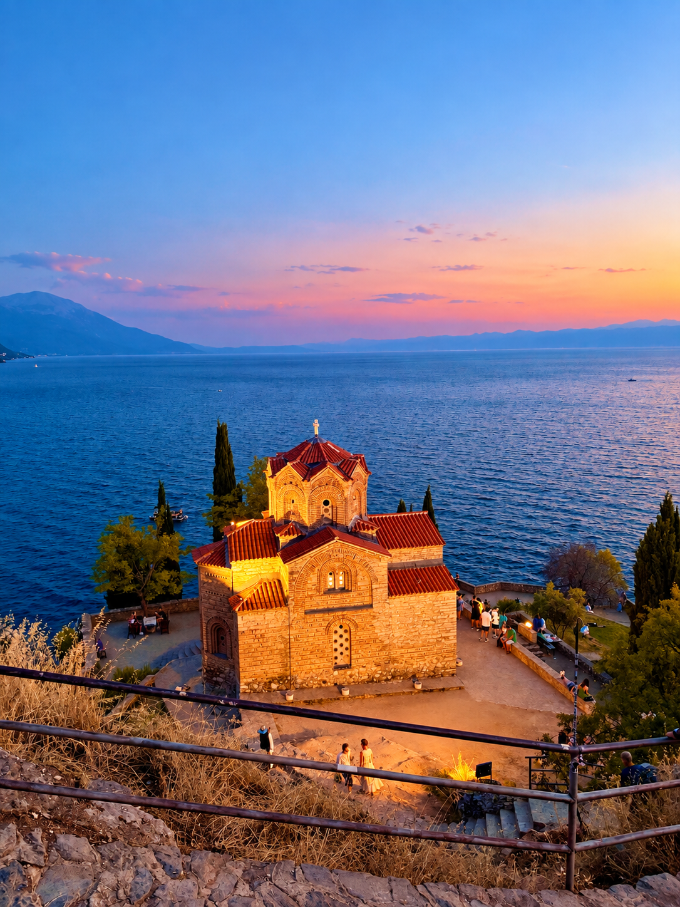
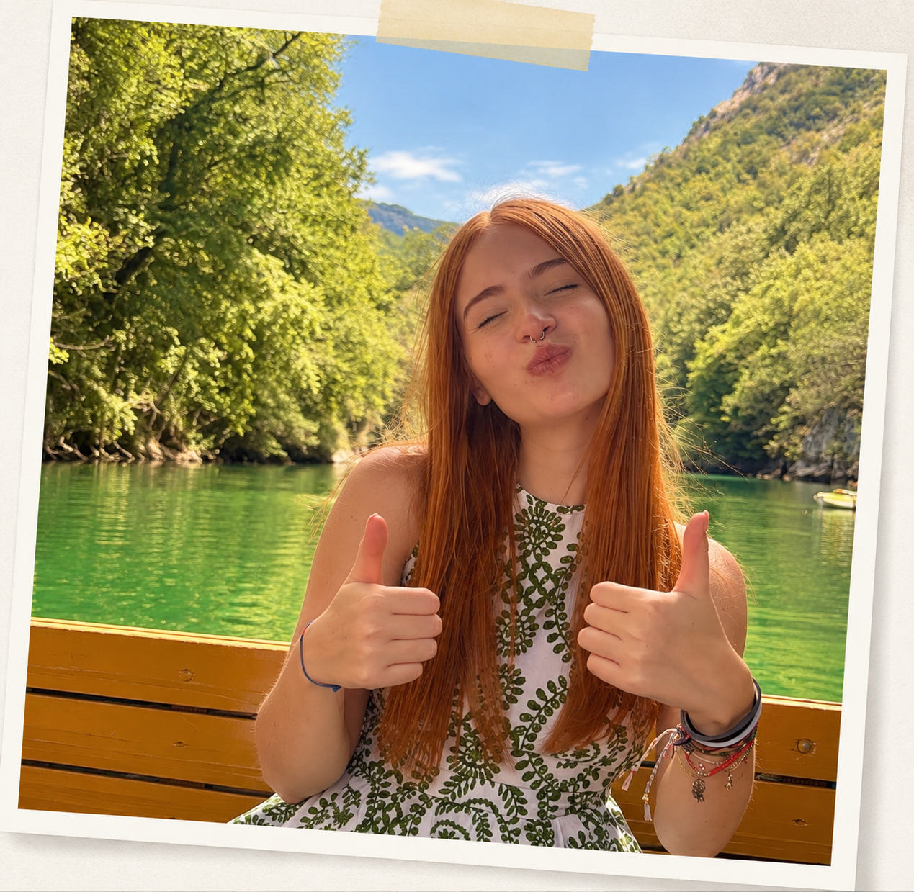

Itinerari autentici, viaggi accessibili e posti che meritano una deviazione dalla solita rotta.

Viaggio, fotografo e prendo appunti praticamente su tutto. Fuori Mappa nasce per raccogliere itinerari reali, esperienze e posti che vale la pena scoprire.
Qui trovi viaggi accessibili, idee meno scontate e itinerari costruiti partendo da esperienze vere, senza corse e senza l'idea che per partire serva spendere una fortuna.
Scopri chi sono →
Non servono viaggi impossibili per scoprire qualcosa di nuovo. Fuori Mappa nasce per raccogliere esperienze vere, itinerari organizzati senza corse e destinazioni che spesso rimangono fuori dai radar.